일단 김해에서 비행기 타고 도쿄로 날아감
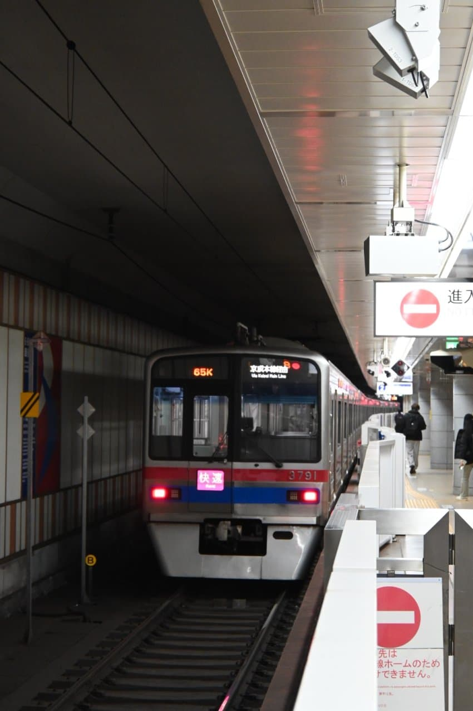
예약한 시부야스카이보러 스카이라이너랑 지하철 타고 바로 시부야로 감
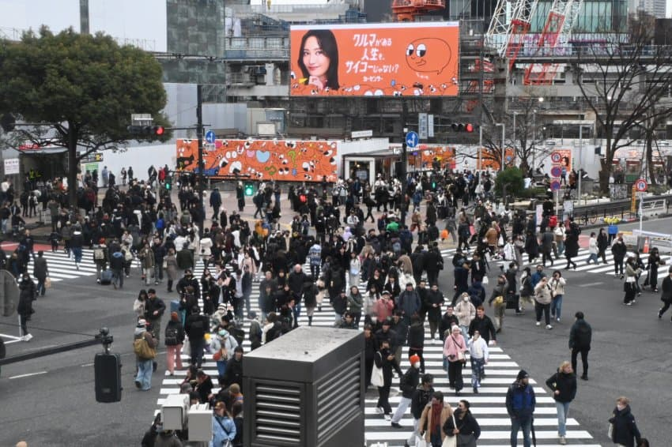
일본 애니나 드라마에서나 보던 시부야 스크램블을 봤는데 영상 찍으러 중앙으로 달려가는 외국인들이 많더라
직접 가보니까 생각한 만큼 뭔가 느껴지지는 않았음
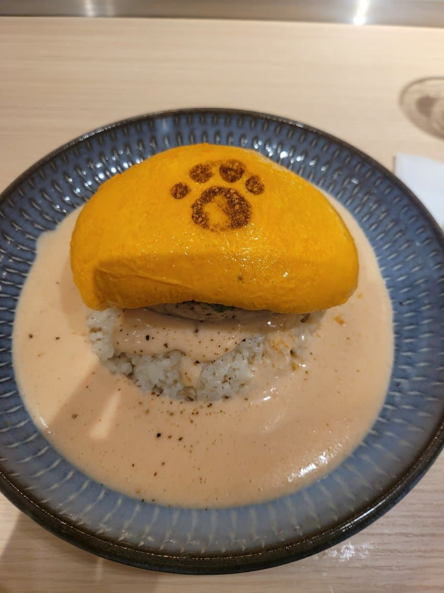
유명하다는 함박스테이크집
맛있긴 했는데 꽤 짜더라
그래도 도쿄가서 처음 먹은거라 싹싹 긁어먹음
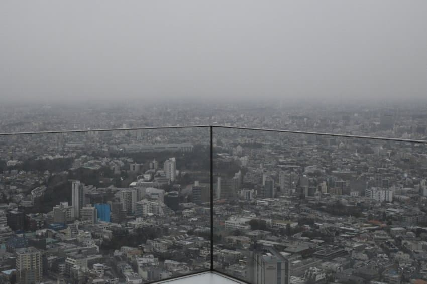
기대를 품고 올라간 시부야 스카이
날씨가 심상치 않더니 눈이 내렸다 춥기도 추웠고
눈이 많이 내리자 방송나오더니 야외에서 못 보게 하더라
원래 일몰까지 있을 생각이였는데 많이 아쉬웠음
숙소가서 뉴스보니까 3월초에 눈 이렇게 많이 내린게 이례적이라더라
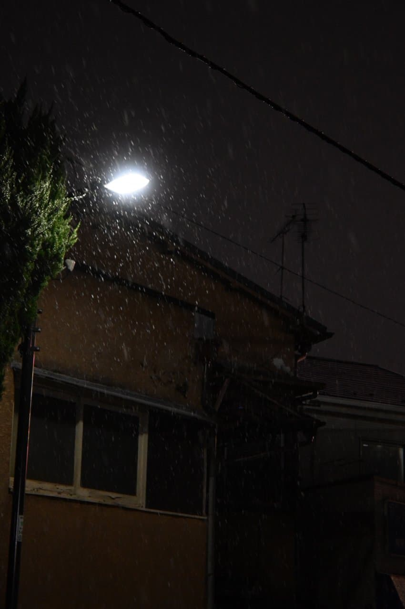
내려와서 시부야 구경 조금 하다가 숙소 가니까 어두워져버림
날씨가 좋지는 않지만 스카이트리 보러감
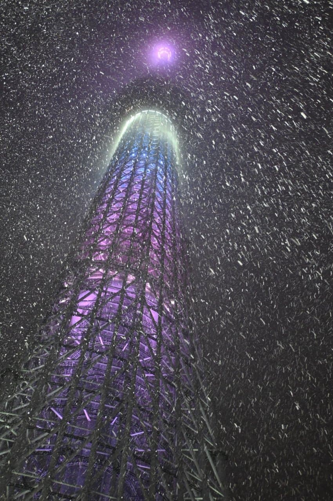
?
도착하니까 눈이 개많이 내림
올라가니까 예상대로 전망이 하나도 안 보이더라
어쩔 수 없지하고 내려온 후에 숙소가서 바로 잠
2일차
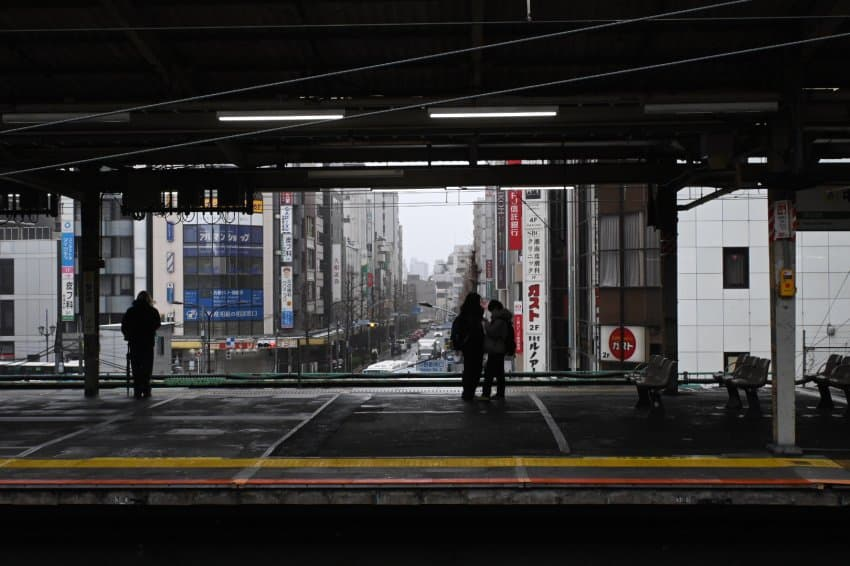
날이 맑기를 기도하고 잠에 들었으나 다음날 날씨도 흐릿하다 못해 비가 왔음
그래도 비오는 도쿄도 느낌있어서 좋긴했음
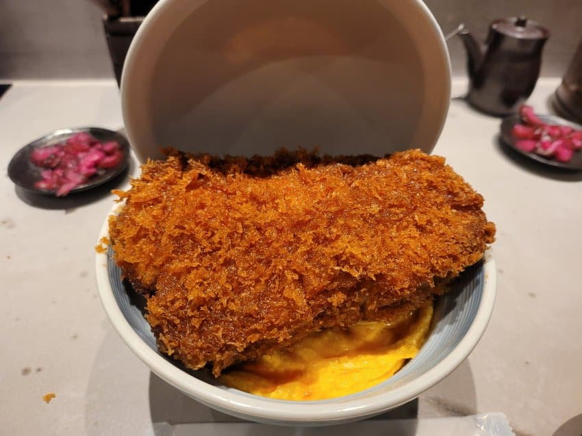
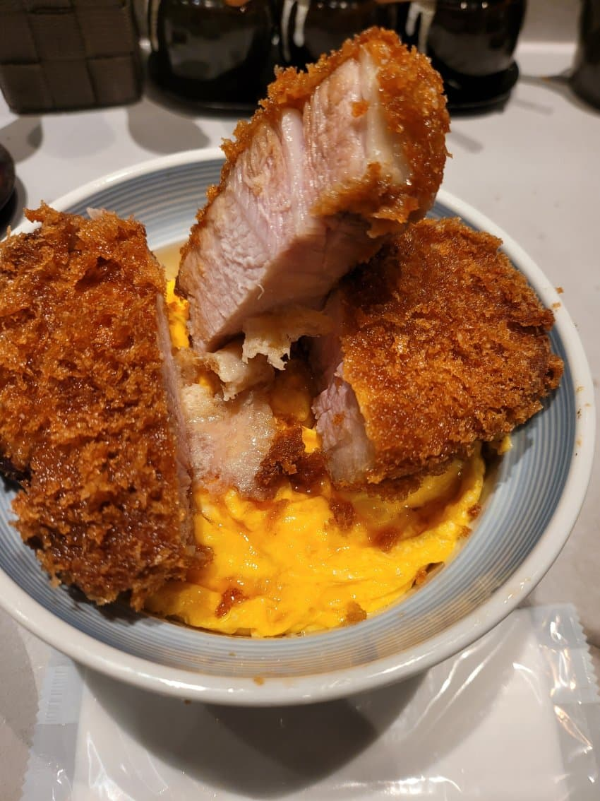
아점으로 먹은 카츠동 돈카츠 마루시치 긴자점
인스타에서 크기보고 꼭 먹어야지 싶었던 곳
일찍 가야했는데 여유부리다가 웨이팅 1시간 반 정도 함....
비오고 바람도 개많이 불어서 얼어죽는 줄 알았음
나오는 시간+양 때문에 회전율이 별로임
어렵사리 들어가서 특상을 먹었는데 돈이 전혀 안 아까웠음
비계랑 살코기 비율이 좋았고 두꺼워서 퍽퍽하거나 조금은 질길 줄 알았는데 한번 수비드하고 튀겨서 하나도 안 질겼음
미소시루도 맛있었는데 리필은 안 되더라
도쿄가면 다시 한번 먹어보고 싶음
tmi로 느끼해서 세븐일레븐 유자레몬사이다 먹었는데 개맛있었음
느끼한 거 싹 내려가더라
향은 뭔가 천혜향 같았고 맛있었음
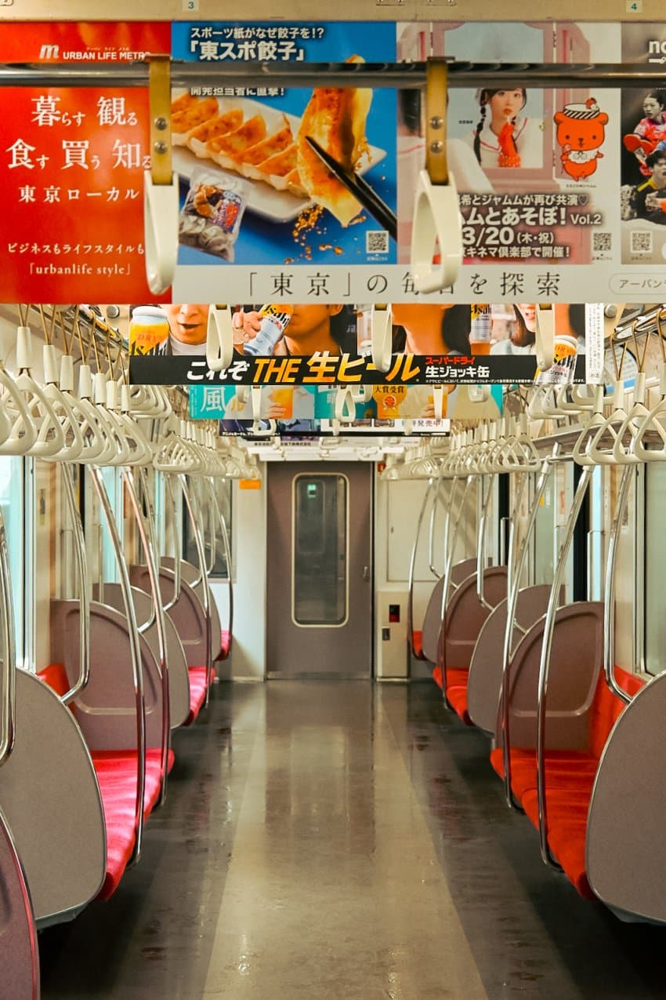
도쿄타워 보러 가러 지하철 탑승
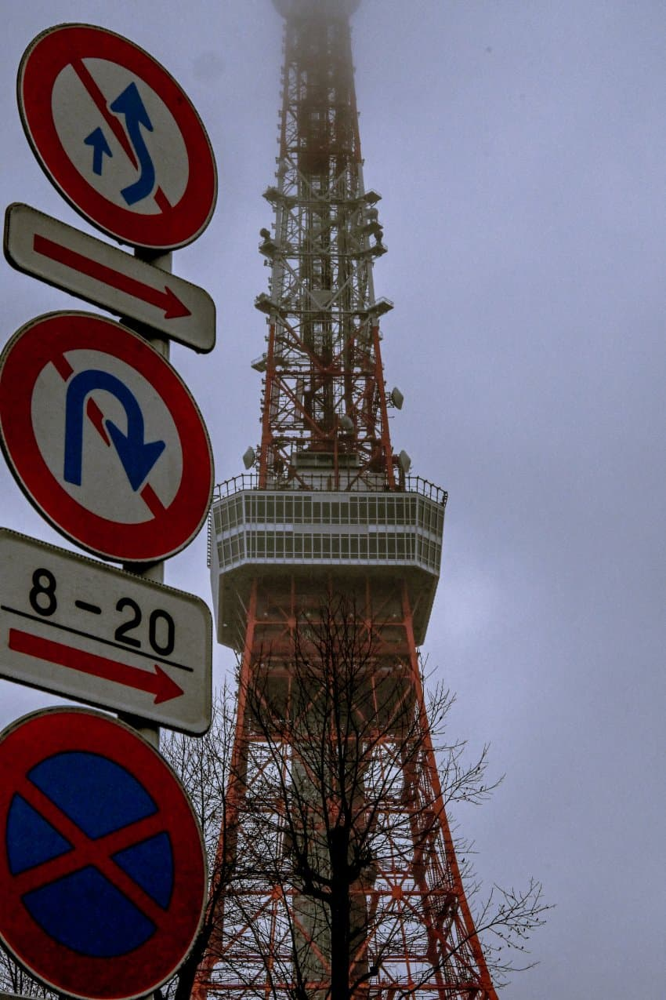
도쿄타워도 예상과 다르지 않게 똑같이 흐리다
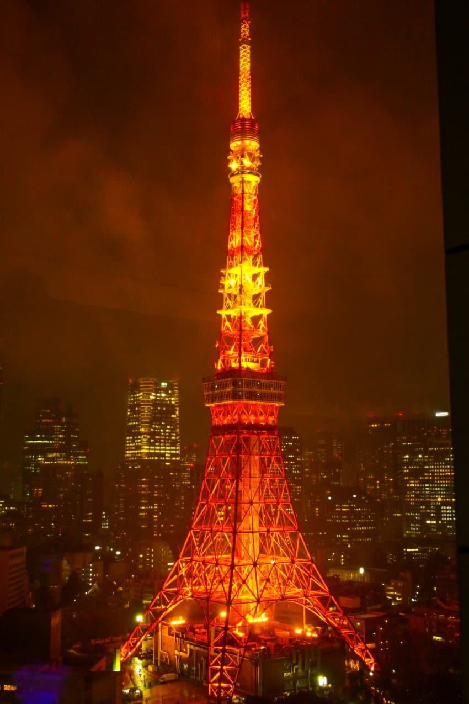
미친 도쿄타워 뷰가 있다길래 찾아간 스카이 라운지 스텔라 가든
도쿄 타워 바로 앞에 있는 프린스 파크 타워 도쿄 호텔 건물 안에 있음
구글 리뷰 보니까 리뷰가 극과 극으로 갈리길래 혹시나 외국인 차별 당할까 싶었는데 막상 가보니까 친철했음
근데 자리 바로 옆에서 도쿄 타워 사진 찍으려하니까 자리에 앉아달라고 하더라
아마 가게 측은 가게를 오로지 바로서 즐겨주기를 바라는 거 같음
실제로 도쿄타워가 보이는 뷰가 아닌 곳에 앉아있던 외국인들이 도쿄타워 찍겠다고 통로에서 사진 찍느라 길을 막기도 했고
자신이 정말 도쿄타워뷰를 바란다면 오픈 전 일찍가는게 좋을 거 같음
내가 갔을 때는 흐려서 그런가 30분전에 갔는데도 정면 뷰는 아니지만 도쿄타워가 보이는 자리를 받았음
지금은 리뉴얼을 했다는데 잘 모르겠네
일단 술집이다보니 자릿세도 있고 비쌈 1인당 술 하나씩은 시켜야함
사진은 대표 술인데 도쿄타워 모양 잔에 따라서 줌
술을 좋아하지는 않지만 마실만 했음
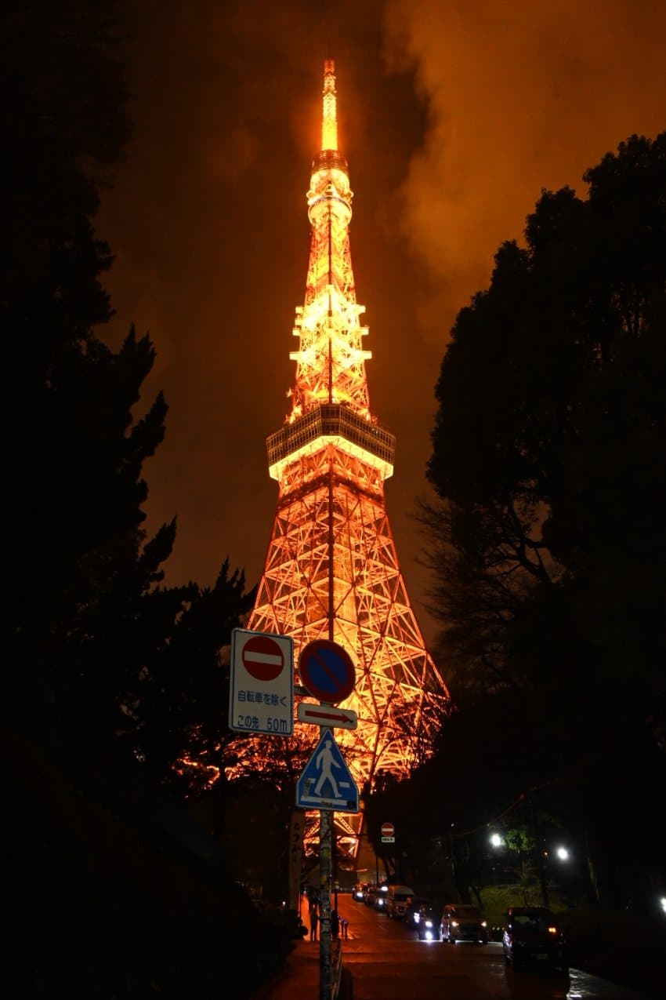
유명한 도쿄타워 사진 스팟
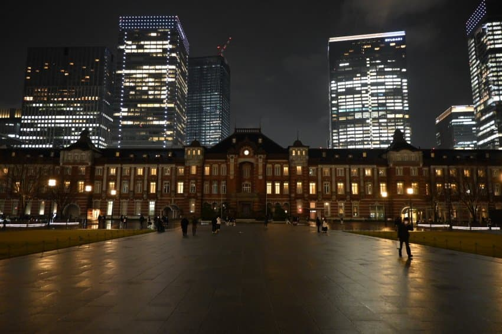
도쿄타워를 들린 후 온 도쿄역
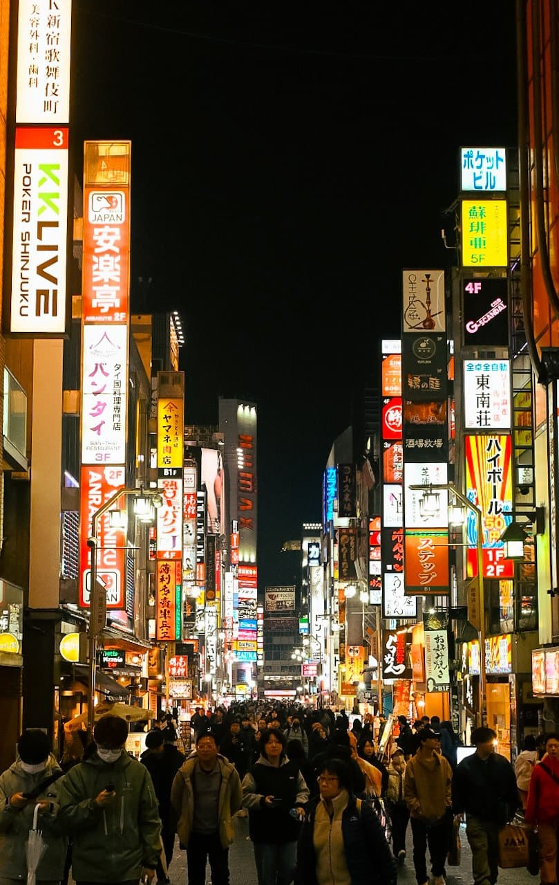
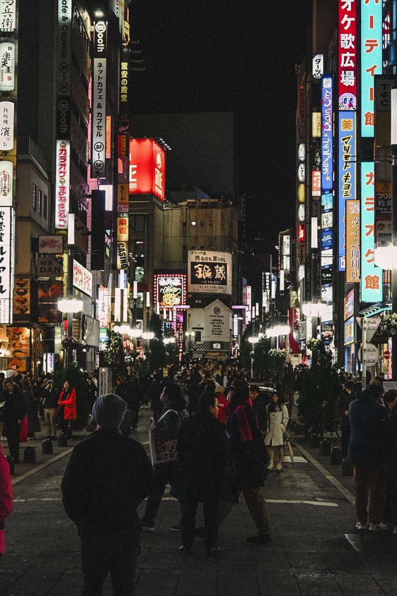
숙소 가는 길에 들른 가부키쵸
조금 들어가니까 줄 서서 호객하고 있더라
좀 무서워서 눈 깔고 빨리 지나감
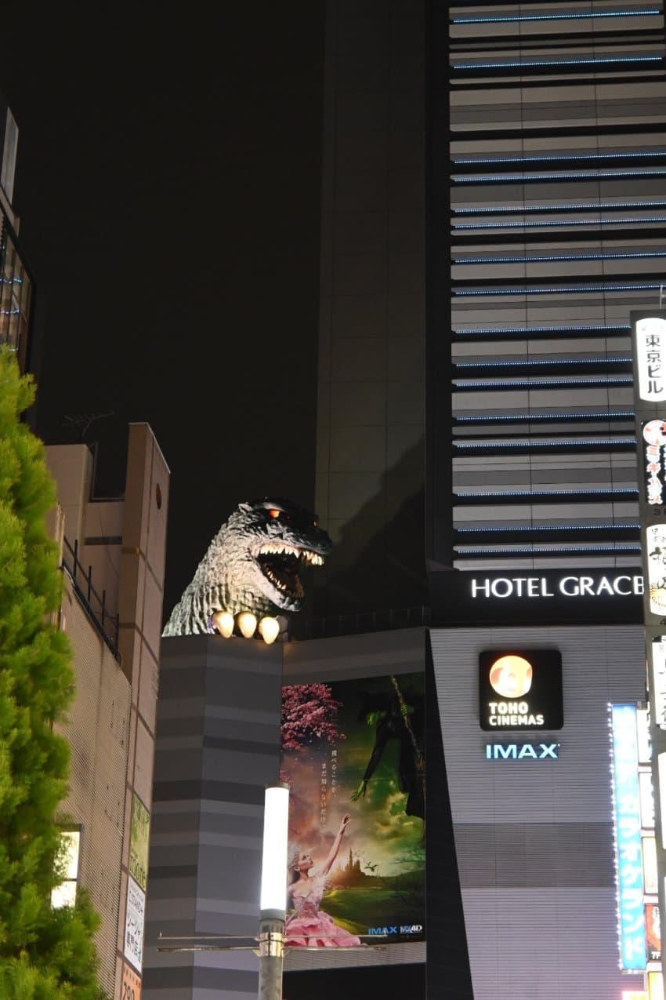
까꿍 고질라
근처에 kfc 있길래 먹었는데 사람이 많아서 회전율이 좋아 그런가 맛있었음
내일은 날이 좋기를 기원하며 숙소에서 해저생물 다큐보면서 잤음
- dc official App
댓글
수집 당시 댓글 20개
애니덕후 · 11.23 22:02:17
ㅇㅇ · 11.23 22:22:50
· ㅇㅇ · 11.27 23:25:14
ㅇㅇ · 11.27 23:21:48
ㅇㅇ · 11.27 23:22:45
· ㅇㅇ · 11.27 23:25:57
자기소개
하지마라
· ㅇㅇ · 11.27 23:31:07
조센징
Hololive만본다 · 11.27 23:28:08
· 개새기 · 11.28 12:47:51
ㅇㅇ · 11.27 23:30:06
ㅇㅇ · 11.27 23:34:19
히이잉 · 11.27 23:39:18
ㅇㅇ · 11.28 03:02:39
ㅇㅇ · 11.28 04:40:12
ㅇㅇ · 11.28 04:40:16
ㅇㅇ · 11.28 06:15:58
주소킹 · 11.28 11:01:12
· 주소킹 · 11.28 11:01:15
ㅇ · 11.28 13:14:00
ㅇㅇ · 11.28 19:40:36